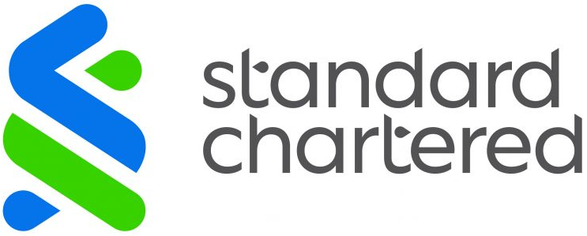
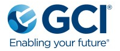
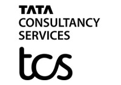

Work Experience

Senior Automation Engineer
Standard Chartered - January 2023 - Current
Design and implement automation solutions for cloud platforms, Microsoft 365, on-premises and online Exchange, Active Directory, and SharePoint Online using PowerShell. Develop web portals and dashboards for administration and monitoring with PowerShell as the backend. Utilize SQL Server Management Studio (SSMS) for database management and query execution.
Senior Automation Engineer
RHB - June 2022 - December 2022
Develop automation solutions using Ansible to streamline operations across Windows and Linux environments, including Wintel, Exchange, and SCCM. Focus on enhancing efficiency, consistency, and scalability in system administration and management tasks.
Senior Consultant
DHL IT Services - February 2022 - July 2022
Manage, configure, and troubleshoot Exchange servers and related infrastructure, addressing issues such as mail flow, database, and connectivity problems. Leverage PowerShell for automating tasks in Exchange On-Premises and O365 environments. Maintain detailed documentation of Exchange configurations and troubleshooting processes to support operational efficiency.
.jpg)
Cloud Engineer
Think Technology Australia - September 2021 - March 2021
Design, implement, and manage cloud-based applications using Azure services. Develop Infrastructure as Code to automate the provisioning and management of cloud resources. Write and maintain scripts for automation and deployment.
Patch Management Engineer
Averis - April 2020 - September 2021
Oversee Patch Management for IT infrastructure, including Windows and Unix/Linux operating systems, ensuring compliance through scheduled tasks, automated scans, and vulnerability analysis. Manage IT asset inventory while maintaining ISO 20000 certification for Configuration Management. Administer and monitor infrastructure equipment, services, and systems to ensure optimal performance and reliability. Handle incident and problem management with recovery and mitigation strategies, and review Disaster Recovery (DRP) and Business Continuity Plans (BCP). Collaborate with third-party vendors for technical support and produce regular management reports.

3rd Line Service Engineer
GCI - January 2020 - April 2020
Manage and monitor Exchange, Skype for Business (SFB), Enterprise Vault (EV), and O365 environments, ensuring security with expertise in Azure Active Directory, Azure Information Protection, Information Rights Management, single sign-on, and multi-factor authentication. Administer Active Directory, DHCP, DNS, File and Print servers, and manage Group Policy Objects (GPOs). Perform user administration for onboarding, offboarding, and permission management. Utilize PowerShell scripting for reporting and automation. Oversee Citrix systems, perform system upgrades, and administer VMware/Windows Server environments, including configuring vCenter, clustering features, and virtual machine provisioning. Troubleshoot performance and connectivity issues, monitor storage latency, and maintain VMware infrastructure health through regular monitoring and upgrades.
Technical Support Engineer
Thomas Duryea Logicalis - December 2018 - December 2019
Manage and configure SCCM for user and device collections, application packaging, software updates, and OS deployment (Windows 10). Utilize task sequences, PowerShell, VBScript, and batch files for automation. Oversee application control and patch management using Ivanti, including whitelisting/blacklisting configurations. Administer Office 365, focusing on domains, security groups, users, licenses, and email security. Manage SharePoint Online, including site creation and feature activation. Perform Active Directory, DHCP, DNS, and server administration. Monitor system alerts, resolve hardware/software issues, and manage Group Policies (GPOs). Administer VMware/Windows Server environments, configure vCenter, and troubleshoot performance issues while maintaining infrastructure health. Generate reports through PowerShell scripting and ensure efficient user onboarding/offboarding.
IT Infrastructure Engineer
Cognizant - January 2017 - December 2018
Manage and configure SCCM for user and device collections, application packaging, deployment, software updates, and compliance settings. Automate tasks using task sequences, PowerShell, VBScript, and batch scripts. Oversee hardware and software inventory, Active Directory, DHCP, DNS, File, and Print servers, as well as GPO management and user administration. Administer VMware/Windows Server environments, including vCenter configuration, virtual machine provisioning, and performance troubleshooting. Maintain VMware health, resolve storage latency issues, and perform system backups/restores with Veeam. Provide L3 support for desktop and application troubleshooting, resolving escalated issues from the Service Desk. Generate reports via PowerShell and ensure robust system monitoring and issue resolution.

Desktop Engineer L2
Tata Consultancy Services - January 2016 - December 2016
Administer and manage GPO, Active Directory, DHCP, DNS, and File Servers. Oversee patch management and provide L1/L2/L3 support for desktop and application troubleshooting. Handle workstation imaging and deployment, SharePoint administration, and asset management. Collaborate with vendors for technical support and procurement.
Global Service Desk
HP - January 2010 - December 2013
Administer file servers and manage user accounts in UNIX, Linux, and Active Directory environments. Provide L1/L2/L3 support for desktop and application troubleshooting across multiple engagement channels, including phone, chat, self-service, and email. Handle workstation imaging and deployment while maintaining comprehensive knowledge management practices.